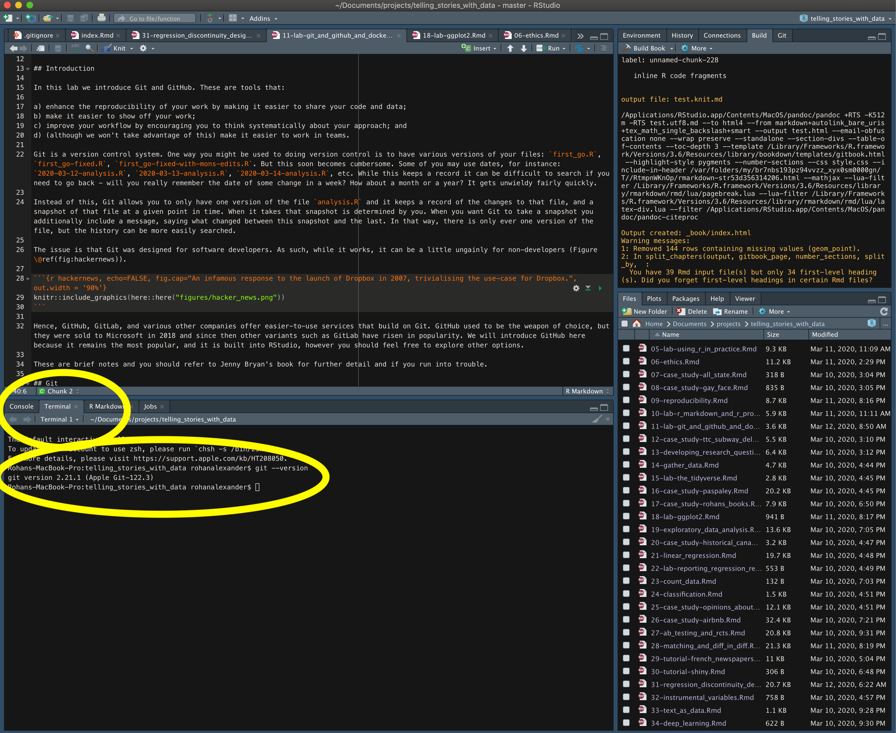

4 Reproducible workflows
Required material
- Read What has happened down here is the winds have changed, (Gelman 2016)
- Read Good enough practices in scientific computing, (Wilson et al. 2017)
- Watch Overcoming barriers to sharing code, (Alexander 2021)
- Watch Make a reprex… Please, (Gelfand 2021)
- Read The tidyverse style guide, ‘Part: Analyses’, (Wickham 2021)
Key concepts and skills
- Reproducibility is a requirement for data science, and this implies sharing data, code, and environment.
- Reproducibility is enhanced by using Quarto, R Projects, and Git and GitHub.
- Quarto involves marking text as certain types and then building a document.
- R Projects enable a file structure that is not dependent on a specific directory set-up.
- Git and GitHub make it easier to share code and data.
- Get the latest changes:
git pull. - Add your updates:
git add -A. - Check on everything:
git status. - Commit your changes:
git commit -m "Short description of changes". - Push your changes to GitHub:
git push.
- Get the latest changes:
- Restart R often (‘Session’ -> ‘Restart R and Clear Output’).
- Debugging is a skill, that improves with practice.
- One key debugging skill is being able to make a reproducible example that reproduces the issue for others.
- Appropriate code structure and comments are a critical aspect of reproducibility because they help others understand.
4.1 Introduction
Suppose you have cancer and you have to choose between a black box AI surgeon that cannot explain how it works but has a 90% cure rate and a human surgeon with an 80% cure rate. Do you want the AI surgeon to be illegal?
Geoffrey Hinton, 20 February 2020.
The number one thing to keep in mind about machine learning is that performance is evaluated on samples from one dataset, but the model is used in production on samples that may not necessarily follow the same characteristics… The finance industry has a saying for this: “past performance is no guarantee of future results”. Your model scoring X on your test dataset doesn’t mean it will perform at level X on the next N situations it encounters in the real world. The future may not be like the past.
So when asking the question, “would you rather use a model that was evaluated as 90% accurate, or a human that was evaluated as 80% accurate”, the answer depends on whether your data is typical per the evaluation process. Humans are adaptable, models are not. If significant uncertainty is involved, go with the human. They may have inferior pattern recognition capabilities (versus models trained on enormous amounts of data), but they understand what they do, they can reason about it, and they can improvise when faced with novelty
If every possible situation is known and you want to prioritize scalability and cost-reduction, go with the model. Models exist to encode and operationalize human cognition in well-understood situations. (“well understood” meaning either that it can be explicitly described by a programmer, or that you can amass a dataset that densely samples the distribution of possible situations – which must be static)
François Chollet, 20 February 2020.
If science is about systematically building and organizing knowledge in terms of testable explanations and predictions, then data science takes this and focuses on data. This means that building, organizing, and sharing knowledge is the critical aspect. Creating knowledge, once, in a way that only you can do it, does not meet this standard. Hence, the need for reproducible workflows for data science.
Alexander (2019) talks about how reproducible research means it can be exactly redone, given all the materials used. This underscores the importance of providing the materials, and this usually means code, data, and software. The minimum expectation is that another person was able to use your code, data, and environment, to get your results, including figures and tables. Ironically there are different definitions of reproducibility between disciplines. Barba (2018) surveys a variety of disciplines and concludes that the predominant language usage implies the following definitions: Reproducible research is when ‘[a]uthors provide all the necessary data and the computer codes to run the analysis again, re-creating the results.’ A replication is a study ‘that arrives at the same scientific findings as another study, collecting new data (possibly with different methods) and completing new analyses.’
Regardless of what it is specifically called, Gelman (2016) identifies how large an issue this is in various social sciences. The problem with work that is not reproducible, is that it does not contribute to our stock of knowledge about the world. Since Gelman (2016), a great deal of work has been done in many social sciences and the situation has improved a little, but much work remains. And the situation is similar in the life sciences (Heil et al. 2021) and computer science (Pineau et al. 2021).
Some of the examples that Gelman (2016) talks about, which turned out to not reproduce are not that important in the scheme of things. But at the same time, we saw, and continue to see, similar approaches being used in areas with big impacts. For instance, many governments have created ‘nudge’ units that implement public policy (Sunstein and Reisch 2017) and they are increasingly using algorithms that they do not make open (Chouldechova et al. 2018). And Herndon, Ash, and Pollin (2014) document how a paper in economics that was used to justify austerity policies following the Global Financial Crisis, turned out to not be reproducible.
At a minimum, and with few exceptions, we must release our code, datasets, and environment. Without the data, we do not know what a finding speaks to (Miyakawa 2020). More banally, we also do not know if there are mistakes or aspects that were inadvertently overlooked (Merali 2010) (Hillel 2017) (Silver 2020). Increasingly, we consider a paper to be an advertisement for work, and for the associated code, data, and environment to be the actual work. Steve Jobs, a co-founder of Apple, talked about how the best craftsmen ensure that even the aspects of their work that no one else will ever see are as polished and high-quality as the aspects that are public-facing (Isaacson 2011). The same is often true in data science, where often one of the distinguishing aspects of high-quality work is that the README and code comments are as polished as the abstract of the associated paper.
To be more specific, consider Wang and Kosinski (2018) who use deep neural networks to train a model to distinguish between gay and heterosexual men. Murphy (2017) provides a summary of the paper and the associated issues, along with comments from the authors. To do this, Wang and Kosinski (2018, 248) needed a dataset of photos of folks that were ‘adult, Caucasian, fully visible, and of a gender that matched the one reported on the user’s profile’. They verified this using Amazon Mechanical Turk, an online platform that pays workers a small amount of money to complete specific tasks. The instructions provided to the Mechanical Turk workers for this task specify that Obama, who had a white mother and a black father, should be classified as ‘Black’; and that Latino is an ethnicity, rather than a race (Mattson 2017). The classification task may seem objective, but, perhaps unthinkingly, echoes the views of Americans with a certain class and background.
This is just one specific concern about one part of the Wang and Kosinski (2018) workflow. Broader concerns are raised by others including Gelman, Mattson, and Simpson (2018). The main issue is that statistical models are specific to the data on which they were trained. And the only reason that we can identify likely issues in the model of Wang and Kosinski (2018) is because, despite not releasing the specific dataset that they used, they were nonetheless open about their procedure. For our work to be credible, it needs to be reproducible by others.
Some of the steps that we can take to make our work more reproducible include:
- Ensure the entire workflow is documented and this may involve addressing questions such as:
- How was the raw dataset obtained and is access likely to be persistent and available to others?
- What specific steps are being taken to transform the raw data in the data that were analyzed, and how can this be made available to others?
- What analysis has been done, and how clearly can this be shared?
- How has the final paper or report been built and to what extent can others follow that process themselves?
- Not worrying about perfect reproducibility initially, but instead focusing on trying to improve with each successive project. For instance, each of the following requirements are increasingly more onerous and there is no need to be concerned about not being able to the last, until we can do the first:
- Can you run your entire workflow again?
- Can ‘another person’ run your entire workflow again?
- Can ‘future’ you run your entire workflow again?
- Can ‘future’ ‘another person’ run your entire workflow again?
- Including a detailed discussion about the limitations of the dataset and the approach in the final paper or report.
The workflow that we follow is illustrated in Figure 4.1. But it can be more concisely summarized as: ‘Think an awful lot, mostly read and write, sometimes code’.
There are various tools that we can use at the different stages that will improve the reproducibility of this workflow. This includes the use of Quarto, R Projects, and Git and GitHub.
4.2 Quarto
4.2.1 Getting started
Quarto integrates code and natural language in a way that is called ‘literate programming’ (Knuth 1984). Quarto is a mark-up language similar to HyperText Markup Language (HTML) or LaTeX, in comparison to a ‘What You See Is What You Get’ (WYSIWYG) language, such as Microsoft Word. This means that all the aspects are consistent, for instance, all top-level heading will look the same. But, it means that we must use symbols to designate how we would like certain aspects to appear. And it is only when we build the mark-up that we get to see what it looks like.
Quarto replaced R Markdown, which is a variant of Markdown that is specifically designed to allow R code chunks to be included. One advantage is that we can get a ‘live’ document in which code executes and then forms part of the document. Another advantage of Quarto is that very similar code can compile into a variety of documents, including html pages and PDFs. Quarto also has default options set up for including a title, author, and date sections. One disadvantage is that it can take a while for a document to compile because all the code needs to run. Tierney (2022) is especially useful for instructions on how to achieve specific outcomes with Quarto.
We can create a new Quarto Document within R Studio (‘File’ -> ‘New File’ -> ‘Quarto Document…’).
4.2.2 Essential commands
Essential markdown commands include those for emphasis, headers, lists, links, and images. A reminder of these is included in R Studio (‘Help’ -> ‘Markdown Quick Reference’).
- Emphasis:
*italic*,**bold** - Headers (these go on their own line with a blank line before and after):
# First level header,## Second level header,### Third level header - Unordered list, with sub-lists:
* Item 1
* Item 2
+ Item 2a
+ Item 2b- Ordered list, with sub-lists:
1. Item 1
2. Item 2
3. Item 3
+ Item 3a
+ Item 3b- URLs can be added by linking text
[the address of this book](https://www.tellingstorieswithdata.com)results in the address of this book. - A paragraph is created by leaving a blank line.
A paragraph about some idea, nicely spaced from the following paragraph.
Another paragraph about another idea, nicely spaced from the earlier paragraph.Once we have added some aspects, then we may want to see the actual document. To build the document click ‘Render’.
4.2.3 R chunks
We can include code for R and many other languages in code chunks within a Quarto Document. Then when we render the document, the code will run and be included in the document.
To create an R chunk, we start with three backticks and then within curly braces we tell Quarto that this is an R chunk. Anything inside this chunk will be considered R code and run as such. For instance, we could load the tidyverse and AER and make a graph of the number of times a survey respondent visited the doctor in the past two weeks.
```{r}
library(tidyverse)
library(AER)
data("DoctorVisits", package = "AER")
DoctorVisits |>
ggplot(aes(x = illness)) +
geom_histogram(stat = "count")
```The output of that code is Figure 4.2.
There are various evaluation options that are available in chunks. We include these, each on a new line, by opening the line with the chunk-specific comment delimiter ‘#|’ and then the option.Helpful options include:
echo: false: run the code and include the output, but do not print the code in the document.include: false: run the code but do not output anything and do not print the code in the document.eval: false: do not run the code, and hence do not include the outputs, but do print the code in the document.warning: false: do not display warnings.message: false: do not display messages.
For instance, we could include the output, but not the code, and suppress any warnings.
```{r}
#| echo: false
#| warning: false
library(tidyverse)
library(AER)
data("DoctorVisits", package = "AER")
DoctorVisits %>%
ggplot(aes(x = visits)) +
geom_histogram(stat = "count")
```It is important to leave a blank line on either side of an R chunk, otherwise it may not run properly. It is also important that lower case is used, i.e. ‘true’ not ‘TRUE’.
Most people did not visit a doctor in the past week.
```{r}
#| echo: false
#| warning: false
library(tidyverse)
library(AER)
data("DoctorVisits", package = "AER")
DoctorVisits %>%
ggplot(aes(x = visits)) +
geom_histogram(stat = "count")
```
There were some people that visited a doctor once, and then very few people that visited two or more times.It is also important that the Quarto Document itself loads any datasets that are needed. It is not enough that they are in the environment. This is because the Quarto Document evaluates the code in the document when it is built, not necessarily the environment.
4.2.4 Abstracts and PDF outputs
An abstract is a short summary of the paper. In the default preamble, we can add a section for an abstract. Similarly, we can change the output format to pdf to produce a PDF. This uses LaTeX in the background and may require the installation of supporting packages. In particular it is common to first install the tinytex package (Xie 2019).
---
title: "My document"
author: "Rohan Alexander"
format: pdf
abstract: "This is my abstract."
---4.2.5 References
We can include references by specifying a BibTeX file in the preamble and then calling it within the text, as needed.
---
title: "My document"
author: "Rohan Alexander"
date: 1 January 2022
format: pdf
abstract: "This is my abstract."
bibliography: bibliography.bib
---We would need to make a separate file called ‘bibliography.bib’ and save it next to the Quarto file. In the BibTeX file we need an entry for the item that is to be referenced. For instance, the citation for R can be obtained with citation() and this can be added to the ‘bibliography.bib’ file. Similarly, the citation for a package can be found by including the package name, for instance citation('tidyverse'). It can be helpful to use Google Scholar, or doi2bib, to get citations for books or articles.
@Manual{,
title = {R: A Language and Environment for Statistical Computing},
author = {{R Core Team}},
organization = {R Foundation for Statistical Computing},
address = {Vienna, Austria},
year = {2021},
url = {https://www.R-project.org/},
}
@Article{,
title = {Welcome to the {tidyverse}},
author = {Hadley Wickham and Mara Averick and Jennifer Bryan and Winston Chang and Lucy D'Agostino McGowan and Romain François and Garrett Grolemund and Alex Hayes and Lionel Henry and Jim Hester and Max Kuhn and Thomas Lin Pedersen and Evan Miller and Stephan Milton Bache and Kirill Müller and Jeroen Ooms and David Robinson and Dana Paige Seidel and Vitalie Spinu and Kohske Takahashi and Davis Vaughan and Claus Wilke and Kara Woo and Hiroaki Yutani},
year = {2019},
journal = {Journal of Open Source Software},
volume = {4},
number = {43},
pages = {1686},
doi = {10.21105/joss.01686},
}We need to create a unique key that we use to refer to this item in the text. This can be anything, provided it is unique, but meaningful ones can be easier to remember, for instance ‘citeR’.
@Manual{citeR,
title = {R: A Language and Environment for Statistical Computing},
author = {{R Core Team}},
organization = {R Foundation for Statistical Computing},
address = {Vienna, Austria},
year = {2021},
url = {https://www.R-project.org/},
}
@Article{citetidyverse,
title = {Welcome to the {tidyverse}},
author = {Hadley Wickham and Mara Averick and Jennifer Bryan and Winston Chang and Lucy D'Agostino McGowan and Romain François and Garrett Grolemund and Alex Hayes and Lionel Henry and Jim Hester and Max Kuhn and Thomas Lin Pedersen and Evan Miller and Stephan Milton Bache and Kirill Müller and Jeroen Ooms and David Robinson and Dana Paige Seidel and Vitalie Spinu and Kohske Takahashi and Davis Vaughan and Claus Wilke and Kara Woo and Hiroaki Yutani},
year = {2019},
journal = {Journal of Open Source Software},
volume = {4},
number = {43},
pages = {1686},
doi = {10.21105/joss.01686},
}To cite R in the Quarto Document we include @citeR, which would put the brackets around the year, like this: R Core Team (2021) or [@citeR], which would put the brackets around the whole thing, like this: (Wickham et al. 2019).
The reference list at the end of the paper is automatically built based on calling the BibTeX file and including the references in the paper. At the end of the Quarto Document, including a heading ‘# References’ and the actual citations will be included after that. When the Quarto file is built, Quarto sees these in the content, goes to BibTeX to get the reference details that it needs, builds the reference list, and then adds it to the end of the output.
4.2.6 Cross-references
It can be useful to cross-reference figures, tables, and equations. This makes it easier to refer to them in the text. To do this for a figure we refer to the name of the R chunk that creates or contains the figure. For instance, (@fig-uniquename) will produce: (Figure 4.3) as the name of the R chunk is fig-uniquename. We need to add ‘fig’ to the start of the chunk name so that Quarto knows that this is a figure. We then include a ‘fig-cap:’ in the R chunk that specifies a caption.
```{r}
#| label: fig-uniquename
#| fig-cap: Number of illnesses in the past two weeks, based on the 1977--1978 Australian Health Survey
#| echo: true
#| warning: false
library(tidyverse)
library(AER)
data("DoctorVisits", package = "AER")
DoctorVisits |>
ggplot(aes(x = illness)) +
geom_histogram(stat = "count")
```library(tidyverse)
library(AER)
data("DoctorVisits", package = "AER")
DoctorVisits |>
ggplot(aes(x = illness)) +
geom_histogram(stat = "count")
We can take a similar approach to cross-reference tables. For instance, (@tbl-docvisittable) will produce: (Table 4.1). In this case we specify ‘tbl’ at the start of the label so that Quarto knows that it is a table. And we specify a caption for the table with ‘tbl-cap:’.
```{r}
#| label: tbl-docvisittable
#| echo: true
#| tbl-cap: "Number of visits to the doctor in the past two weeks, based on the 1977--1978 Australian Health Survey"
DoctorVisits |>
count(visits) |>
knitr::kable()
```DoctorVisits |>
count(visits) |>
knitr::kable()| visits | n |
|---|---|
| 0 | 4141 |
| 1 | 782 |
| 2 | 174 |
| 3 | 30 |
| 4 | 24 |
| 5 | 9 |
| 6 | 12 |
| 7 | 12 |
| 8 | 5 |
| 9 | 1 |
Finally, we can also cross-reference equations. To that we need to add a tag {#eq-macroidentity} which we then reference. For instance, we then use @eq-macroidentity to produce Equation 4.1.
$$
Y = C + I + G + (X - M)
$$ {#eq-macroidentity}\[ Y = C + I + G + (X - M) \qquad(4.1)\]
When using cross-references, it is important that the labels are relatively. In general, try to keep the names simple but unique, and if possible, avoid punctuation and stick to letters and hyphens. Do not use underbars in the labels because that can cause an error.
4.3 R projects and file structure
We can use R Studio to create an R project. This means that we can keep all the files (data, analysis, report, etc) associated with a particular project together. A project can be created in R Studio ‘File’ -> ‘New Project’, then select ‘empty project’, name the project and decide where to save it. For instance, a project focused on maternal mortality, may be called ‘maternalmortality’, and might be saved within a folder of other projects. The use of R Projects is ‘the only practical convention that creates reliable, polite behavior across different computers or users and over time.’ (Jennifer Bryan and Hester 2020). Further, projects are ‘neither new, nor unique to R’, but are a well-established part of software development.
Once a project has been created, a new file with the extension ‘.RProj’ will appear in that folder. As an example, of a folder with an R Project, an example Quarto Document, and an appropriate file structure is available here. That can be downloaded: ‘Code’ -> ‘Download ZIP’.
The main advantage of using an R Project is that we are more easily able to reference other files in a self-contained way. That means when others want to reproduce our work, they know that all the file references and structure should not need to be changed. It means that files are referenced in relation to where the ‘.Rproj’ file is. For instance, instead of reading a csv from, say, "~/Documents/projects/book/data/" you can read it in from book/data/. It may be that someone else does not have a ‘projects’ folder, and so the former would not work for them, while the latter would.
The use of R projects is required to meet the minimal level of reproducibility. The use of functions such as setwd(), and computer-specific file paths, bind the work to your computer in a way that is not appropriate.
There are a variety of ways to set-up a folder. A variant of Wilson et al. (2017) that is often useful is shown in the example. Here we have an ‘inputs’ folder that contains raw data (which should never be modified (Wilson et al. 2017)) and literature related to the project (which cannot be modified). An ‘outputs’ folder contains data that we create using R, as well as the paper that we are writing. And a ‘scripts’ folder is what modifies the raw data and saves it into ‘outputs’. We will do the majority of our work in ‘scripts’, and the Quarto file for the paper in ‘outputs’. Useful other aspects include a ‘README.md’ which will specify overview details about the project, and a LICENSE. Another helpful variant of this project skeleton is provided by Mineault and The Good Research Code Handbook Community (2021).
4.4 Version control
We implement version control through a combination of Git and GitHub. There are a variety of reasons for this including:
- enhance the reproducibility of work by making it easier to share code and data;
- make it easier to share work;
- improve workflow by encouraging systematic approaches; and
- make it easier to work in teams.
Git is a version control system. The way one often starts doing version control is to have various versions of the one file: ‘first_go.R’, ‘first_go-fixed.R’, ‘first_go-fixed-with-mons-edits.R’. But this soon becomes cumbersome. One often soon turns to dates, for instance: ‘2022-01-01-analysis.R’, ‘2022-01-02-analysis.R’, ‘2022-01-03-analysis.R’, etc. While this keeps a record it can be difficult to search when we need to go back, because it can be difficult to remember the date some change was made. In any case, it quickly gets unwieldy for a project that is being regularly worked on.
Instead of this, we use Git so that we can have one version of the file, say, ‘analysis.R’ and then use Git to keep a record of the changes to that file, and a snapshot of that file at a given point in time.
We determine when Git takes that snapshot, and when we take that snapshot, we additionally include a message saying what changed between this snapshot and the last. In that way, there is only ever one version of the file, but the history can be more easily searched.
The issue is that Git was designed for teams of software developers. As such, while it works, it can be a little ungainly for non-developers. But in general it is the case that Git has been usefully adapted for data science, even when the only collaborator one may have is one’s future self (Jennifer Bryan 2018).
Hence, GitHub, GitLab, and various other companies offer easier-to-use services that build on Git. We will introduce GitHub here because it ‘is by far the most dominant code-hosting platform’ (Eghbal 2020, 21) and it is built into R Studio, but other options have advantages.
One of the challenging aspects of Git is the terminology. Folders are called ‘repos’. Saving is called a ‘commit’. One gets used to it eventually, but initially feeling confused is entirely normal.
Jenny Bryan (2020) is especially useful for setting up and using Git and GitHub.
4.4.1 Git
We need to git check whether Git is installed. Open R Studio, go to the Terminal, type the following, and then enter/return.
git --versionIf you get a version number, then you are done (Figure 4.4).

If you have a Mac then Git should come pre-installed, if you have Windows then there is a chance, and if you have Linux then you probably do not need this guide. If you do not get a version number, then you need to install it. To do that you should follow the instructions specific to your operating system in Chapter 5 of Jenny Bryan (2020).
After we have Git, then we need to tell it our username and email. We need to do this because Git adds this information whenever we take a ‘snapshot’, or to use Git’s language, whenever we make a commit.
Again, within the Terminal, type the following, replacing the details with yours, and then enter/return after each line.
git config --global user.name 'Rohan Alexander'
git config --global user.email 'rohan.alexander@utoronto.ca'
git config --global --listThe details that you enter here will be public. There are various ways to hide your email address if you need to do this and GitHub provides instructions about this. Again, if you have issues, or need more detailed instructions about this step, then please see Chapter 7 of Jenny Bryan (2020).
4.4.2 GitHub
Now that Git is set-up we need to set-up GitHub. We created an account in Chapter @ref(drinking-from-a-fire-hose). So log into that. We now need to make a new folder (which is called a ‘repo’ in Git). Look for a ‘+’ in the top right, and then select ‘New Repository’ (Figure 4.5).

At this point we can add a sensible name for the repo. Leave it as public for now, because it can always be deleted later. And check the box to ‘Initialize this repository with a README’. Leave ‘Add .gitignore’ set to ‘None’. After that, click ‘Create repository’ (Figure 4.6).

This will take us to a screen that is fairly empty, but the details that we need are in the green ‘Clone or Download’ button, which we can copy by clicking the clipboard (Figure 4.7).

Now returning to R Studio, we open Terminal, and use cd to navigate to the directory where we want to create this folder. Then type the following, replacing repo details with your own, and enter/return.
git clone https://github.com/RohanAlexander/test.gitAt this point, a new folder has been created and we can now use it.
To use GitHub for a project that we are actively working on we follow a procedure:
- The first thing to do is almost always to pull the latest changes with
git pull. To do this, open Terminal, and navigate to the folder usingcd. Then typegit pulland enter/return. - We can then make a change to the folder, for instance, update the README, and then save it as normal.
- Once this is done, we need to ‘add’, ‘commit’, and ‘push’.
- As before, use
cdto navigate to the folder, then typegit statusand enter/return to see if there are any changes (you should see some reference to the change you made). - Then type
git add -Aand enter/return. This adds the changes to the staging area. - Then type
git statusand enter/return to verify that you are happy with what was added. - Then type
git commit -m "Minor update to README"and enter/return. The message should be informative about the change that was made. - Again, type
git statusand enter/return to check on everything. - Finally, type
git pushand enter/return to push everything to GitHub.
- As before, use
To summarize the workflow (assuming we are already in the relevant folder):
git pull
git status
git add -A
git status
git commit -m "Short commit message"
git status
git push4.4.3 Using GitHub within R Studio with the Git pane
The procedure that we went through is useful to better understand what is happening when we use Git and GitHub but can be a bit cumbersome. Usefully, GitHub is built into R Studio and so we can use the Git pane to move away from the Terminal.
Get started by creating a new repo in GitHub, as before, and copy the repo information, as before. At this point, open R Studio, and create a new project using version control (‘Files’ -> ‘New Project’ -> ‘Version Control’ -> ‘Git’, and then paste the information for the repo). Follow through the rest of the set-up by naming the project something sensible, saving it somewhere sensible, and clicking ‘Open in new session’, before creating the project. This will then create a new folder with an R Project which will be Git-initialized and linked to the GitHub repo.
If we then open this R Project, we will have a ‘Git’ tab (Figure 4.8).

We can then use Git through that tab. As before, we first want to ‘pull’, but we can do this by clicking the blue down arrow. As before, we want to commit the files that have changes, and we do this by selecting the ‘staged’ checkbox against the files that we would like to commit. Then ‘Commit’. Again, we want to include a message with our commit, and we do this by typing a message in the ‘Commit message’ box and then ‘Commit’. Finally, we can ‘Push’. Further details on this workflow are available in Chapter 12 of Jenny Bryan (2020).
4.4.4 Using GitHub with usethis
We used the Git pane in R Studio to reduce the need to use the Terminal, but it did not remove the need to go to GitHub and set-up a new project. Having set-up Git and GitHub, we can further improve our workflow by using usethis to do much of the work (Wickham and Bryan 2020).
After installing and loading usethis we need to check that we have set-up Git with usethis::git_sitrep(). This should print information about the user. We can use usethis::use_git_config() to update the username or email address. For instance,
library(usethis)
use_git_config(user.name = "Rohan Alexander", user.email = "rohan.alexander@utoronto.ca")We can then create a new R Project (‘File’ -> ‘New Project’ -> ‘New Directory’ -> ‘New Project’ -> Add a name and save it in a sensible location and click ‘Open in new session’.)
We then use usethis::use_git() to initiate things. It will ask if we are happy to commit files.
Having committed, we can use usethis::use_github() to push to GitHub.
4.5 Using R in practice
4.5.1 Dealing with errors
When you are programming, eventually your code will break, when I say eventually, I mean like probably 10 or 20 times a day.
Gelfand (2021)
Everyone who uses R, or any programming language for that matter, has trouble find them at some point. This is normal. Programming is hard and everyone struggles sometimes. At some point code will not run or will throw an error. This is normal, and it happens to everyone. Everyone gets frustrated.
To move forward we develop strategies to work through the issues:
- If you are get an error message, then sometimes it will be useful. Try to read it carefully to see if there is anything of use in it.
- Try to search, say on Google, for the error message. It can be useful to include ‘tidyverse’ or ‘in R’ in the search to help make the results more appropriate. Sometimes Stack Overflow results can be useful.
- Look at the help file for the function, by putting ‘?’ before the function, for instance,
?pivot_wider(). A common issue is to use a slightly incorrect argument name or format, such as accidentally including a string instead of an object name. - Look at where the error is happening and remove code until the error is resolved, and then slowly add code back again.
- Check the class of the object, with
class(), for instance,class(data_set$data_column). Ensuring that it is what it expected. - Restart R (‘Session’ -> ‘Restart R and Clear Output’) and load everything again.
- Restart the computer.
- Search for what you are trying to do, rather than the error, being sure to include ‘tidyverse’ or ‘in R’ in the search to help make the results more appropriate. For instance, ‘save PDF of graph in R made using ggplot’. Sometimes there are relevant blog posts or Stack Overflow answers that will help.
- Making a small, self-contained, reproducible example ‘reprex’ to see if the issue can be isolated and to enable others to help.
More generally, while this is rarely possible to do, it is almost always helpful to take a break and come back the next day.
4.5.2 Reproducible examples
No one can advise or help you—no one. There is only one thing you should do. Go into yourself.
Rilke (1929)
Asking for help is a skill like any other. We get better at it with practice. It is important to try not to say ‘this doesn’t work’, ‘I tried everything’, ‘your code does not work’, or ‘here is the error message, what do I do?’. In general, it is not possible to help based on these comments, because there are too many possible issues. You need to make it easy for others to help you. This involves a few steps.
- Provide a small, self-contained, example of your data, and code, and detail what is going wrong.
- Document what you have tried so far, including which Stack Overflow and R Studio Community pages have you looked at, and why are they not quite what you are after?
- Be clear about the outcome that you would like.
Begin by creating a minimal REPRoducible EXample, a ‘reprex’. This is code that contains what is needed to reproduce the error, but only what is needed. This means that the code it likely a smaller, simpler, version that nonetheless reproduces the error.
Sometimes this process enables one to solve the problem. If it does not, then it gives someone else a fighting chance of being able to help. It is important to recognize that there is almost no chance that you have got a problem that someone has not addressed before. It is more likely that the main difficulty is in trying to communicate what you are trying to do and what is happening, in a way that allows others to recognize both. Developing tenacity is important.
To develop reproducible examples, the reprex package (Jennifer Bryan et al. 2019) is especially useful. To use it we:
- Load the
reprexpackage:library(reprex). - Highlight and copy the code that is giving issues.
- Run
reprex()in the Console.
If the code is self-contained, then it will preview in the Viewer. If it is not, then it will error, and the code needs to be re-written so that it is self-contained.
If you need data to reproduce the error, then you should use data that is built into R. There are a large number of datasets that are built into R and can be seen using library(help = "datasets"). But if possible, you should use a common option such as ‘mtcars’ or ‘faithful’.
4.5.3 Mentality
(Y)ou are a real, valid, competent user and programmer no matter what IDE you develop in or what tools you use to make your work work for you
(L)et’s break down the gates, there’s enough room for everyone
Sharla Gelfand, 10 March 2020.
If you write code, then you are a programmer regardless of how you do it, what you are using it for, or who you are. But there are a few traits that one tends to notice great programmers have in common.
- Focused: Often having an aim to ‘learn R’ or something similar tends to be problematic, because there is no real end point to that. It tends to be more efficient to have smaller, more specific goals, such as ‘make a histogram about the 2019 Canadian Election with ggplot’. This is something that can be focused on and achieved in a few hours. The issue with goals that are more nebulous, such as ‘I want to learn R’, is that it becomes easy to get lost on tangents, much more difficult to get help. This can be demoralizing and lead to folks quitting too early.
- Curious: It is almost always useful to have a go. In general, the worst that happens is that you waste your time. You can rarely break something irreparably with code. If you want to know what happens if you pass a ‘vector’ instead of a ‘dataframe’ to
ggplot()then try it. - Pragmatic: At the same time, it can be useful to stick within reasonable bounds, and make one small change each time. For instance, say you want to run some regressions, and are curious about the possibility of using the
tidymodelspackage (Kuhn and Wickham 2020) instead oflm(). A pragmatic way to proceed is to use one aspect from thetidymodelspackage initially and then make another change next time. - Tenacious: Again, this is a balancing act. There are always unexpected problems and issues with every project. On the one hand, persevering despite these is a good tendency. But on the other hand, sometimes one does need to be prepared to give up on something if it does not seem like a break-through is possible. Here mentors can be useful as they tend to be a better judge of what is reasonable. It is also where appropriate planning is useful.
- Planned: It is almost always useful to excessively plan what you are going to do. For instance, you may want to make a histogram of the 2019 Canadian Election. You should plan the steps that are needed and even to sketch out how each step might be implemented. For instance, the first step is to get the data. What packages might be useful? Where might the data be? What is the back-up plan if the data do not exist there?
- Done is better than perfect: We all have various perfectionist tendencies to a certain extent, but it can be useful to initially try to turn them off to a certain extent. In the first instance, try to write code that works, especially in the early days. You can always come back and improve aspects of it. But it is important to actually ship. Ugly code that gets the job done, is better than beautiful code that is never finished.
4.5.4 Code comments and style
Code must be commented (Lee 2018). Comments should focus on why certain code was written, (and to a lesser extent, why a common option is not selected).
There is no one way to write code, especially in R. However, there are some general guidelines that will make it easier for you even if you are just working on your own. It is important to recognize that most projects will evolve over time, and one purpose served by code comments are as ‘[m]essages left for your future self (or near-future others) [that] help retrace and justify your decisions’ (Bowers 2011).
Comments in R can be added by including the # symbol. We do not have to put a comment at the start of the line, it can be midway through. In general, we do not need to comment what every aspect of your code is doing but we should comment parts that are not obvious. For instance, if we read in some value then we may like to comment where it is coming from.
You should comment why you are doing something (Wickham 2021). What are you trying to achieve?
You must comment to explain weird things. Like if you are removing some specific row, say row 27, then why are you removing that row? It may seem obvious in the moment, but future-you in six months will not remember.
You should break your code into sections. For instance, setting up the workspace, reading in datasets, manipulating and cleaning the dataset, analyzing the datasets, and finally producing tables and figures. Each of these should be separated with comments explaining what is going on, and sometimes into separate files, depending on the length.
Additionally, at the top of each file it is important to basic information, such as the purpose of the file, and pre-requisites or dependencies, the date, the author and contact information, and finally and red-flags or todos.
At the very least every R script needs a preamble and a clear demarcation of sections.
#### Preamble ####
# Purpose: Brief sentence about what this script does
# Author: Your name
# Data: The date it was written
# Contact: Add your email
# License: Think about how your code may be used
# Pre-requisites:
# - Maybe you need some data or some other script to have been run?
#### Workspace setup ####
# do not keep the install.packages line - comment out if need be
# Load libraries
library(tidyverse)
# Read in the raw data.
raw_data <- readr::read_csv("inputs/data/raw_data.csv")
#### Next section ####
...
4.6 Exercises and tutorial
4.6.1 Exercises
- According to Alexander (2019) research is reproducible if (pick one)?
- It is published in peer-reviewed journals.
- All of the materials used in the study are provided.
- It can be reproduced exactly without the authors providing materials.
- It can be reproduced exactly, given all the materials used in the study.
- According to the timeline of Gelman (2016), a) when did Paul Meehl identify various issues; and b) when did null hypothesis significance testing (NHST) become controversial (pick one)?
- 1970s-1980s; 1990s-2000.
- 1960s-1970s; 1980s-1990.
- 1970s-1980s; 1980s-1990.
- 1960s-1970s; 1990s-2000.
- Which of the following are components of the project layout recommended by Wilson et al. (2017) (select all that apply)?
- requirements.txt
- doc
- data
- LICENSE
- CITATION
- README
- src
- results
- Based on Alexander (2021) please write a paragraph about some of the barriers you overcame, or still face, with regard to sharing code that you wrote.
- According to Gelfand (2021), what is the key part of ‘If you need help getting unstuck, the first step is to create a reprex, or reproducible example. The goal of a reprex is to package your problematic code in such a way that other people can run it and feel your pain. Then, hopefully, they can provide a solution and put you out of your misery.’ (pick one)?
- package your problematic code
- other people can run it and feel your pain
- the first step is to create a reprex
- they can provide a solution and put you out of your misery
- According to Gelfand (2021), what are the three key aspects of a reprex (select all that apply)?
- data
- only the libraries that are necessary and all the libraries that are necessary
- relevant code and only relevant code
- According to Wickham (2021) for naming files, how would these files ‘00_get_data.R’, ‘get data.R’ be classified (pick one)?
- bad; bad.
- good; bad.
- bad; good.
- good; good.
- Which of the following would result in bold text in Quarto (pick one)?
**bold**##bold##*bold*#bold#
- Which option would hide the warnings in a Quarto R chunk (pick one)?
echo: falseinclude: falseeval: falsewarning = falsemessage = false
- Which options would run the R code chunk and display the results, but not show the code in a Quarto R chunk (pick one)?
echo: falseinclude: falseeval: falsewarning = falsemessage = false
- Why are R Projects important (select all that apply)?
- They help with reproducibility.
- They make it easier to share code.
- They make your workspace more organized.
- They ensure reproducibility.
- Please discuss a circumstance in which an R Project would be useful.
- Consider this sequence: ‘
git pull,git status, ________,git status,git commit -m "My message",git push’. What is the missing step (pick one)?git add -A.git status.git pull.git push.
- Assuming the libraries and datasets have been loaded, what is the mistake in this code:
DoctorVisits |> select("visits")(pick one)?"visits"DoctorVisitsselect|>
- What is a reprex and why is it important to be able to make one (select all that apply)?
- A reproducible example that enables your error to be reproduced.
- A reproducible example that helps others help you.
- A reproducible example during the construction of which you may solve your own problem.
- A reproducible example that demonstrates you have actually tried to help yourself.
- The following code produces an error. Please use
reprex(Jennifer Bryan et al. 2019) to build a reproducible example that you could use to get help with it, and submit the reprex.
library(tidyverse)
oecd_gdp <-
read_csv("https://stats.oecd.org/sdmx-json/data/DP_LIVE/.QGDP.../OECD?contentType=csv&detail=code&separator=comma&csv-lang=en")
head(oecd_gdp)
library(forcats)
library(dplyr)
oecd_gdp_most_recent <-
oecd_gdp |>
filter(TIME == "2021-Q3",
SUBJECT == "TOT",
LOCATION %in% c("AUS", "CAN", "CHL", "DEU", "GBR",
"IDN", "ESP", "NZL", "USA", "ZAF"),
MEASURE == "PC_CHGPY") |>
mutate(european = if_else(LOCATION %in% c("DEU", "GBR", "ESP"),
"European",
"Not european"),
hemisphere = if_else(LOCATION %in% c("CAN", "DEU", "GBR", "ESP", "USA"),
"Northern Hemisphere",
"Southern Hemisphere"),
)
library(ggplot)
library(patchwork)
oecd_gdp_most_recent |>
ggplot(mapping = aes(x = LOCATION, y = Value)) |>
geom_bar(stat="identity")4.6.2 Tutorial
Please put together a small Quarto file that downloads a dataset using opendatatoronto, cleans it, and makes a graph. Then exchange it with someone else. Ask them to both read the code and to run it, and to then provide you with feedback about both aspects. Write a one-to-two pages of single-spaced content, about the comments that you received and changes that you could make going forward.
4.6.3 Paper
At about this point, Paper One (Appendix @ref(paper-one)) would be appropriate.